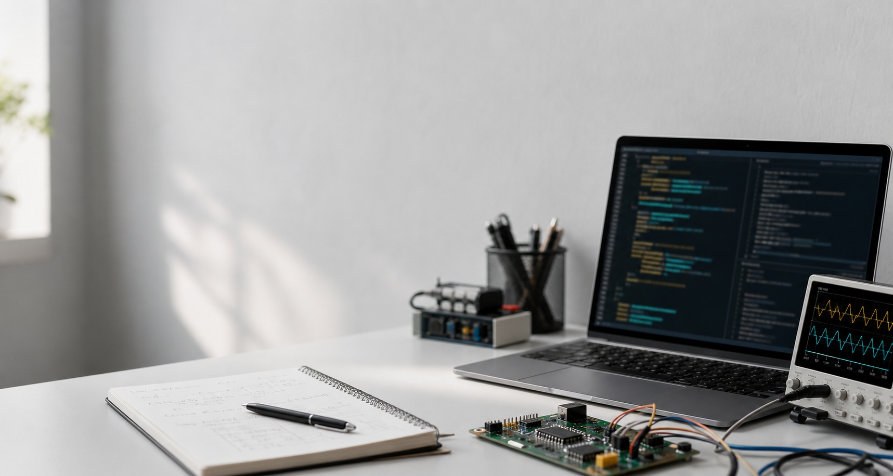

I am an undergraduate student in Electrical and Computer Engineering at
ZJU-UIUC Institute, Zhejiang University. In 2025, I participated in an
exchange program at the University of Illinois Urbana-Champaign. My
current interests include machine learning, large language models,
multimodal agents, and AI systems that can organize knowledge and
support reasoning.
Research Interests
My recent work and reading focus on agent-oriented AI systems, especially
how models perceive information, structure knowledge, plan tasks, and
produce reliable outputs.
Multimodal and Embodied Agents:
agents that use visual or environmental information for task planning,
reasoning, and action decisions.
LLM-based Knowledge Systems:
pipelines that turn unstructured papers into structured cases,
patterns, and agent-facing knowledge packages.
Reliable LLM Evaluation:
bias detection, quality control, and benchmark-style analysis for
language-model outputs.

News
Started research work on Neuro-Knowledge Factory, an LLM-based
literature-mining pipeline for neuroscience and BCI papers.
Participated in an exchange program at UIUC.
Joined undergraduate research on fairness testing for large language
models.
Selected Work
Neuro-Knowledge Factory: LLM-based Literature Mining
Mar. 2026 - Present
Built a neuroscience literature-mining pipeline for 15K+ papers,
converting PDF and API sources into standardized Markdown records
and structured research cases for downstream LLM analysis.
Python / LLMs / Literature Mining / Data Pipeline
Bias Detection for Large Language Models
Apr. 2024 - Jun. 2025
Developed an insertion-based program to detect social biases generated
by large language models, constructed a multi-dimensional bias dataset,
and evaluated model behavior across several LLMs.
Python / NLP / Bias Detection / LLMs
Image Classification with Deep Learning
Dec. 2025
Built and trained deep learning models for waste image classification,
covering preprocessing, model training, and evaluation in Google Colab.
Python / PyTorch / CNN / Deep Learning
Educations
Zhejiang University
Aug. 2023 - Present
Bachelor of Engineering in Electrical and Computer Engineering.
University of Illinois Urbana-Champaign
Aug. 2023 - Present
Bachelor of Science in Electrical Engineering.
Experience
Undergraduate Researcher, ZJU
Mar. 2026 - Present
Project group advised by Prof. Yang Yang.
Undergraduate Researcher, ZJU
Apr. 2024 - Jun. 2025
Large language modeling fairness decision making, advised by Prof. Zuozhu Liu.
Vice-chairperson, Yuehai Instrumental Music Club
Aug. 2023 - Present
Organized campus music events and participated in major performances.